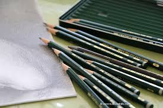
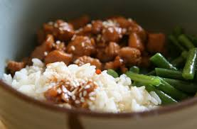
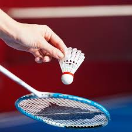

Dessin
Le dessin est une passion qui me permet de m'évader et de donner vie à mes idées. J'aime expérimenter différentes techniques, du crayon au digital, en passant par l'aquarelle et l'encre. C'est un moyen d'expression créatif que je pratique régulièrement.

Cuisine
La cuisine est un véritable art pour moi. J'aime expérimenter de nouvelles recettes, découvrir des saveurs du monde entier et partager des moments conviviaux autour d'un bon repas. La créativité en cuisine est sans limite, et chaque plat est une occasion de se réinventer.

Ping-Pong
Le ping-pong est l'un de mes sports préférés. Il allie rapidité, précision et stratégie. C'est une activité dynamique que j'apprécie autant en compétition qu'en loisir, et elle me permet de maintenir un bon équilibre physique et mental.

Badminton
Le badminton est un autre sport qui me passionne, combinant agilité, réflexes et endurance. Jouer au badminton est un excellent moyen de se défouler, de renforcer la coordination et de passer de bons moments entre amis ou en famille.

Musique
La musique fait partie intégrante de ma vie. Que ce soit en écoutant mes morceaux préférés ou en jouant d'un instrument, la musique m'apporte une source constante d'inspiration et d'émotions. J'aime découvrir de nouveaux genres musicaux et partager cette passion avec les autres.